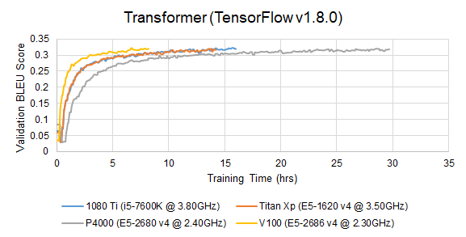
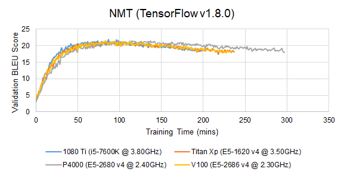
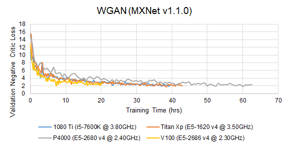
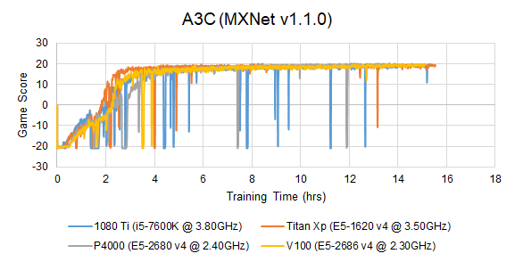

End-to-End Training
Before we proceed to actual profiling, we need to verify that the profiled implementation is able to produce the reported validation accuracy. However, training a DNN model to full completion is usually an extremely time-consuming job. Due to the limited time and hardware resources, we only managed to produce training curves on the P4000, 1080 Ti, Titan Xp and V100-SXM2 architectures for some models. We will gradually add more training curves.



